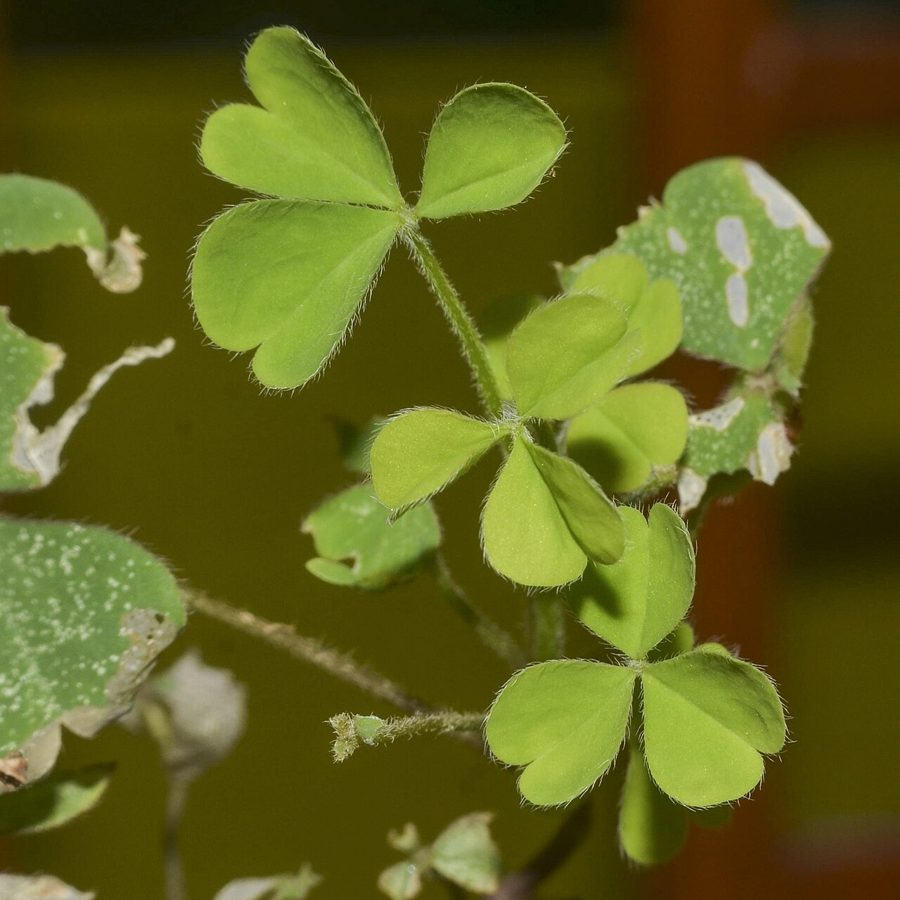

खट्टी बूटीCreeping Wood Sorrel
Oxalis corniculata · Oxalidaceae · FLR-0201

- Scientific nameवैज्ञानिक नाम
- Oxalis corniculata L.
- Familyकुल
- Oxalidaceae
- Hindiहिंदी
- खट्टी बूटी / तिपतिया
- Local namesस्थानीय नाम
- khatti buti, khatti booti, tipatiya, tipatia, wood sorrel
- Status hereयहाँ की स्थिति
- native
- Movementआवागमन
- Resident, here all year
- IUCNIUCN
- not evaluated
- Reviewसमीक्षा
- audited and independently read
When to look कब देखें
Present all year.साल भर मौजूद।
Uses and possibilities उपयोग और संभावनाएँ
“Traditional medicine” means a documented traditional use, not a claim that it works. Nothing on this page is medical advice.
Drawn from the documented uses in the profile below, where each is labelled traditional, current or a research lead. All uses →
खट्टी बूटी / Creeping Wood Sorrel
Oxalis corniculata L. — Oxalidaceae
खट्टी बूटी (तिपतिया) — बगीचों और खेतों की नरम ज़मीन पर साल भर उगने वाली एक छोटी-सी गहरी-हरी बेल। पत्तियाँ तीन की संख्या में, हरे-भरे, दिखने में तिपतिया (अच्छे भाग्य का प्रतीक) जैसी। पत्तियों और डंडी को दाँतों से तोड़ने से खट्टा स्वाद आता है — इसीलिए खट्टी बूटी नाम है। पीले फूल, बहुत छोटे, बारी-बारी से खिलते हैं। गाँवों में गर्मी-बुखार और अपच के लिए पारंपरिक दवाई में प्रयोग किया जाता है। जहाँ-तहाँ सलाद में भी डाला जाता है।
Quick Identification त्वरित पहचान
| Feature | Description |
|---|---|
| Habit | Prostrate, creeping herb, 10–30 cm, rooting at nodes |
| Leaves | Trifoliate (three leaflets), alternate, 0.8–1.5 cm, obcordate (notched at tip) |
| Leaflet color | Usually green, sometimes tinged purple or bronze |
| Flowers | Bright yellow, small (0.5–0.8 cm), 5 petals |
| Fruit | Slender pod (2–3 cm), erect when young, arching with age |
| Taste | Distinctly sour (oxalic acid) |
| Stem | Thin, wiry, often reddish, rooting at nodes |
Field tip: A small, creeping, persistent herb with trifoliate leaves (three leaflets per leaf), distinctive yellow flowers, and small sour-tasting leaves. Breaking a leaf and tasting it will confirm the characteristic tartness due to oxalic acid. Common in gardens and on pathways.
Morphology आकारिकी
| Measurement | Range |
|---|---|
| Plant spread | 10–30 cm |
| Stem length | 10–30 cm when spread |
| Leaflet length | 0.8–1.5 cm |
| Flower diameter | 0.4–0.8 cm |
| Pod length | 2–3 cm |
Habit: Prostrate annual to perennial herb, 10–30 cm in spread; stems wiry, thin, green or reddish, rooting at nodes when in contact with moist soil.
Leaves: Trifoliate (three leaflets per leaf), alternate along the stem; leaflets obcordate, 0.8–1.5 cm long, bright green to bronze-tinted, margins entire, apex notched.
Flowers: Regular, 5 petals, bright yellow (rarely orange or white), small, 0.5–0.8 cm across; flowers produced sequentially from leaf axils over a long period; 10 stamens (in 2 whorls, dimorphic — long and short).
Fruits: Dehiscent capsules, slender, 2–3 cm long, erect in young stage, arching downward with age, containing multiple seeds.
Seeds: Small, brown, with conspicuous ridges.
हिंदी: तीन पत्तियों की। नीचे की ओर जड़ें निकालने वाली। पीले फूल। फली पतली, लंबी। सब कुछ खट्टा।
Behaviour & Ecology व्यवहार और पारिस्थितिकी
Oxalis corniculata is a cosmopolitan, nearly year-round herb capable of surviving diverse soil and moisture conditions. The plant is more common and vigorous in moist, shaded microsites (kitchen garden corners, field margins with standing water, under trees) than in dry, exposed ground. The creeping habit and ready rooting at nodes allow rapid lateral spread once established, and a single plant can colonize significant area in a growing season.
The bright yellow flowers are visited by small bees, flies, and other pollinators. The plant tolerates moderate shade and performs well even under cultivation. Vegetative reproduction via rooting at nodes is often more significant than sexual reproduction via seed.
The oxalic acid content of the leaves is the primary defensive chemical, making the plant unpalatable to most herbivores but edible to humans in small quantities.
हिंदी: सब जगह उग सकता है — पर नम और छायादार जगह बेहतर है। नीचे रुकने वाली जड़ें। खट्टा रसायन कीटों को रोकता है।
Life Cycle / Phenology जीवन चक्र
| Month | Event |
|---|---|
| Throughout year | Continuous germination and growth in suitable conditions |
| March onwards | Rapid growth in spring; flowering begins |
| April–October | Peak flowering and seed production |
| September–December | Extended flowering in post-monsoon season |
| December–February | Reduced growth in winter but plant persists |
From germination to first flower: 3–4 weeks. Flowering is nearly continuous whenever conditions are favorable.
हिंदी: साल भर बीज अंकुरित हो सकते हैं। मार्च-अक्टूबर: फूल। ठंड में भी रहता है।
Agricultural / Human Relevance कृषि और मानव संबंध
Weed status: Khatti buti is a common garden and field weed, but rarely reaches problematic levels due to its small size and shallow rooting. It is easily hand-pulled and does not significantly compete with major crops.
Food use: The sour, three-leaved herb is occasionally eaten in salads or as a flavouring agent in curries, particularly in South India. The sour taste adds interest to bland vegetables. The leaves are also used to flavour chutneys.
Traditional medicine: The plant is documented in traditional medicine systems (Ayurveda, folk medicine) for treating digestive complaints, loss of appetite, and fevers. The leaf juice or decoction is traditionally used as a cooling (shita) remedy. Modern scientific validation is limited.
Nutritional value: The leaves contain oxalic acid, vitamin C, and other nutrients, but consumption should be moderate due to the oxalic acid, which can interfere with calcium absorption if consumed in large quantities.
Ecological indicator: The presence of Oxalis corniculata can indicate disturbed soil and a tendency toward moisture retention.
हिंदी: छोटी खरपतवार है। सलाद और चटनी में डाली जाती है। खुजली और पेट की समस्या में पारंपरिक दवाई। खेत में नुकसान नहीं।
Expected Locally स्थानीय रूप से अपेक्षित
Not a field record. Written from published accounts for eastern Uttar Pradesh. No confirmed local sighting yet — if you have seen it, that is what the atlas needs.
अभी तक स्थानीय पुष्टि नहीं। यह विवरण प्रकाशित स्रोतों से है, किसी अवलोकन से नहीं।
Oxalis corniculata is expected to be found year-round on kitchen gardens, field margins, and roadsides in Basti district, particularly in moist, shaded locations. The small size and trifoliate leaves make it easy to overlook, but the bright yellow flowers should aid identification.
Distribution वितरण
Global range: Native to India; now naturalized throughout tropical and subtropical regions worldwide, including North America, Europe, and Australia.
In India: Extremely common throughout the country from sea level to high elevations in the Himalayas.
In Uttar Pradesh: Found in all districts as a common weed of gardens, fields, and disturbed ground.
In Basti district / eastern UP: Abundant as a persistent weed in kitchen gardens and field margins.
Research Questions शोध प्रश्न
Anyone can investigate these | कोई भी इन प्रश्नों की जाँच कर सकता है
- How many seeds does one khatti buti plant produce in a season, and how far do they disperse? — Count seed pods; measure seed weights and dispersal distances.
- What is the oxalic acid content of the leaves, and does it vary by season or soil type? — Compare leaves from different times and locations; taste intensity.
- Which insects or pollinators visit the yellow flowers, and how long does each flower stay open? — Observe flowers; record visitor identity and frequency.
- Is khatti buti used in local traditional medicine, and what is the preparation? / गाँव में खट्टी बूटी का कोई पारंपरिक उपयोग है? — Interview healers; document uses.
- Can khatti buti grow well in clay soil, or does it prefer sandy or loamy soil? — Compare growth in different soil types.
Similar Species मिलती-जुलती प्रजातियाँ
| Species | How to tell apart | हिंदी |
|---|---|---|
| Oxalis acetosella | Trifoliate; leaflets heart-shaped; alpine/montane; not in lowlands | पहाड़ी प्रजाति |
| Medicago lupulina | Trifoliate but small yellow flowers in denser clusters; different leaflet shape | गुच्छे में फूल, अलग आकार |
Field rule: A small, prostrate, creeping herb with three small, notched leaflets, bright yellow flowers, and distinctly sour-tasting leaves is khatti buti.
Taxonomy & Classification वर्गीकरण
Original description. Oxalis corniculata was described by Carl Linnaeus in 1753 in Species Plantarum. The genus name Oxalis is derived from the Greek oxys (sour), referring to the acidic taste of the leaves. The specific name corniculata refers to the horn-like (cornute) shape of the fruits.
Subspecies. Monotypic — no subspecies are currently recognised, though significant geographical variation exists.
Family and order placement. Oxalidaceae (Wood Sorrel family), order Oxalidales. The family is pantropical and includes other Oxalis species and a few genera.
Phylogenetic notes. Oxalis corniculata is closely related to the temperate O. acetosella (Common Wood Sorrel) and many South American Oxalis species.
IUCN status rationale. Not evaluated. Widely distributed and stable; not assessed for conservation.
Photo Gallery फोटो गैलरी
Photos needed आवश्यक फोटो
- [ ] Full plant showing trifoliate leaves and rooting nodes (पूरा पौधा)
- [ ] Yellow flowers (पीले फूल)
- [ ] Mature pod showing erect and arching forms (फली)
- [ ] Leaf trio showing notch at apex (तीन पत्तियाँ)
No photos yet — add field photos to media/species/khatti_buti/ and run node scripts/sync_photos.js.
References संदर्भ
- Linnaeus, C. (1753). Species Plantarum, Vol. 1. Laurentii Salvii, Stockholm.
- Hooker, J.D. (1875). Flora of British India, Vol. 1. L. Reeve & Co., London.
- Chopra, R.N., Nayar, S.L. & Chopra, I.C. (1956). Glossary of Indian Medicinal Plants. CSIR, New Delhi.
- Botanical Survey of India. State Flora Series: Flora of Uttar Pradesh. BSI, Kolkata.
- Evert, R.F. (2008). Esau's Plant Anatomy, 3rd ed. Wiley-Interscience, Hoboken.
- GBIF Occurrence Data — Oxalis corniculata, India (2024–2026).
Source file: species/flora/weeds/khatti_buti.md